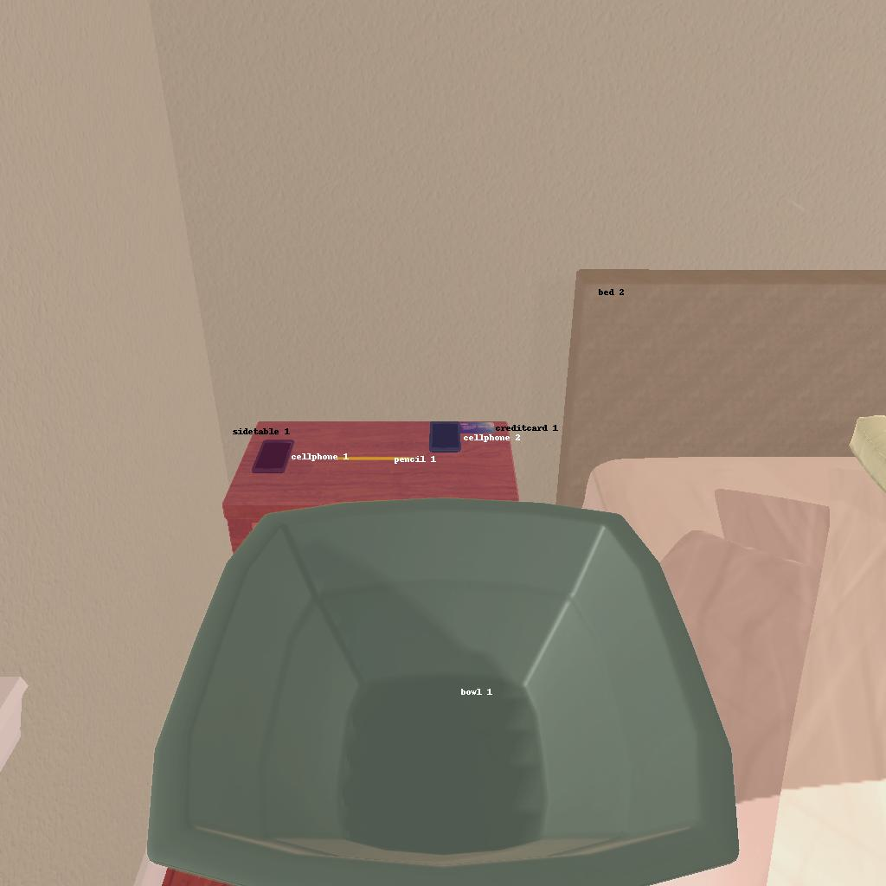

---------------------------------------------------------task: 6---------------------------------------------------------
--------------------------------------------------------------------------------------------------------------------------------------------------------------------
--------------------------------------------------------------------------------------------------------------------------------------------------------------------
Step:--------------------------------------------------------------------------13-------------------------------------------------------------------------------
----------------------------------------
VLM Prompt:
Image1:
Image2:
Image3:
**Instruction**
1. Analyze the provided image to identify all visible household objects, focusing on those relevant to the task description "put some cd on safe."
2. Use the analysis of the image and the task hint "The agent must find an object of the desired type, pick it up, find the correct location to place it, and put it down there." to answer the question: what is the most reasonable action in the choices for the task description "put some cd on safe"?
4. Decide and write the answer using the template: The answer is: (i): , where i is the real number. If there is no desired object in the image, search every place based on **Initial Observation** to find the object. And if no one is exactly correct, choose a similar answer.
**Initial Observation**
You are in the middle of a room. Looking quickly around you, you can see bed (1-2), dresser (1), sidetable (1-2), drawer (1-11), desk (1), garbagecan (1), safe (1)
**Answer Choices**
(1): go to bed 1
(2): go to bed 2
(3): go to sidetable 1
(4): go to drawer 2
(5): go to sidetable 2
(6): go to drawer 3
(7): go to drawer 4
(8): go to desk 1
(9): go to garbagecan 1
(10): go to drawer 5
(11): go to drawer 6
(12): go to drawer 7
(13): go to drawer 9
(14): go to drawer 10
(15): go to drawer 11
(16): go to safe 1
(17): open drawer 1
(18): close drawer 1
(19): put bowl 1 in/on drawer 1
(20): examine bowl 1
(21): examine drawer 1
**Answer**
Let's think step by step by following the instructions.
----------------------------------------
----------------------------------------
Original Response:
The task is to "put some cd on safe." From the initial observation, we know there is a safe (safe 1) in the room. Looking at the images provided, we can see a cd (cd 1) on the dresser in Image1 and Image2.
The most reasonable action to complete the task would be to pick up the cd from the dresser and place it on the safe. However, none of the answer choices directly state "pick up cd 1" or "put cd 1 on safe 1." Therefore, we need to choose the closest action that will allow us to complete the task.
Since the cd is on the dresser and we need to place it on the safe, the first step would be to go to the dresser where the cd is located. The dresser is labeled as "dresser 1" in the initial observation. However, there is no direct action to "go to dresser 1" in the answer choices.
The closest action that would allow us to eventually pick up the cd and place it on the safe would be to go to the location where the cd is located, which is "drawer 1," as it is part of the dresser where the cd is placed.
The answer is: (17): open drawer 1.
----------------------------------------
----------------------------------------
>>> Refine Original VLM Response and Get Pure Action: open drawer 1
----------------------------------------
-----------------------------------------------------------------
Running time: 24.594563245773315 seconds
Total Money: 3.460699999999999
-----------------------------------------------------------------
-----------------------------------------------------------------
Text Observation:Nothing happens.
-----------------------------------------------------------------
UNSUCCEED